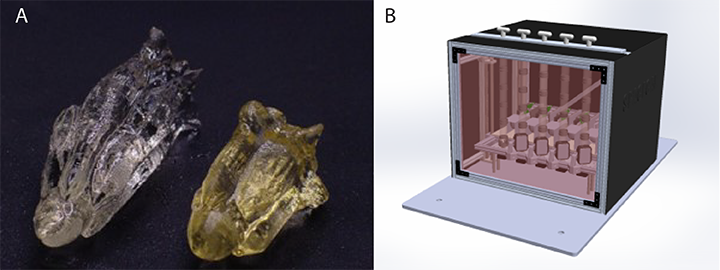

Computed axial lithography is particularly promising as an in-space manufacturing process for photopolymers because, unlike mature (layer-by-layer) processes including stereolithography and digital light printing, CAL does not require a flat interface to be maintained between the resin precursor and a surrounding gas. The precursor material can be completely sealed in a transparent container and illuminated from outside. Coupled with automated post-processing, this feature of CAL offers opportunities for, e.g., rapid production of spare parts during missions, or production of biological tissue scaffolds on demand for time-critical experiments.
Currently, we are undertaking a NASA-sponsored project (through the Tech Flights program) to evaluate CAL in microgravity via parabolic flight. Our first mission was in May 2022 and our second in November 2022. A range of materials and printing geometries was evaluated. A news article from UC Berkeley about the project is here, and a piece by 3D Printing Nerd is here. We are currently planning a suborbital flight to build on this work.
Experimentation with CAL in microgravity also offers a way to separate experimentally the effects on CAL's printing accuracy of the optical system's design, the material's formulation, and any gravitational loads exerted on the printed part as it polymerizes and thus densifies. On Earth, CAL printing into certain low-viscosity precursor materials can result in the printed object sinking under its own weight, or, in some cases, temporarily floating because the heat released during polymerization causes expansion of the solid component, which overcomes the effects of densification. Microgravity experiments allow us to eliminate the effects of sinking or buoyancy during the illumination phase, and probe other rate- and resolution-limiting effects in isolation.
